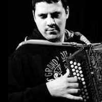

Davide Mereu
Nacido en el año 1981, se crió en Sorgono, un pequeño pueblo en el centro de Cerdeña. Comienza su próspero camino musical a los 7 años con clases particulares de guitarra clásica y teoria de la música, siguiendo hasta los 19 años tras conseguir el diploma de solfeo en el conservatorio L.Canepa de Sassari. Al mismo tiempo toca también con algunos grupos de la zona, explorando el mundo del Rock-Blues con la guitara eléctrica.
Siempre ha estado dentro del mundo del folklore gracias a su padre Gianni, director artístico del Gruppo Folk "Sorgono", aficionado de las tradiciones populares. A los 14 años inicia su estudios con el acordeón diatónico de manera autodidacta, imitando a los músicos que solían tocar para las fiestas del pueblo. Aprendió con el músico Giuseppe Brundu las melodías originales de la zona; en circunstancias de que su maestro falleció, ahora es uno de los pocos músicos que todavía puede interpretar esta música, dejandola plasmada en un CD.
Ha partecipado en muchos festivales nacionales e internacionales, en Italia y en Europa, con grupos de bailarines y de músicos. A los 23 años con su padre y su hermana Cristina funda la asociación "Lobas - Laboratorio di Musica, Cultura e Tradizioni Popolari" (www.lobas.it), un proyecto cultural que le permitirá participar en los mayores festivales internacionales de música y danza popular y para aprender nuevas técnicas con el acordeón, tanto solo como acompañado, por el músico Andrea Pisu, que toca las Launeddas (instrumento de caña particular de Cerdeña).
Ahora, mientras sigue su investigación sobre las melodias populares de Cerdeña, aprende las técnicas de los mayores músicos europeos, adhiriendo al repertorio sardo un concierto para bailes con canciones de "bal-folk" (francés, ocitano, países vascos, ... ) junto con otros músicos como Alberto Ceria y Andrea Capezzuoli.
Massimo Congiu
 Nacido en Cagliari en el año 1985, creció en Quartu S.E. donde, al tener 12 años, quedó impresionado ante un amigo que tocaba un instrumento hecho con sólo tres cañas: las Launeddas. Nacido en Cagliari en el año 1985, creció en Quartu S.E. donde, al tener 12 años, quedó impresionado ante un amigo que tocaba un instrumento hecho con sólo tres cañas: las Launeddas.
Emprende aquí su camino en el mundo de dicho instrumento, con las clases del maestro Carlo Mariani y escuchando viejos discos de vinilo. Empieza a tocar como solista en muchas ocasiones con el estilo de música de la escuela Burranca.
Participa en el festival de jazz en Sant'Anna Arresi con la orquesta "Le Lunghe Canne" en el 1999, 2000 y 2003. Aquí pudo tocar con grandes músicos como Trilok Gurtu, Marc Ribot y Pat Metheny.
Alterna su camino en la música tradicional con algunos experimentos, como el proyecto "Isola Song" de los hermanos Melis, juntando varios estilos como el rock, la música clásica, la étnica y la DJ-Music. Ha participado también en muchos festivales de música étnica por toda Europa.
Desde Enero 2002 colabora con Emanuele Garau, tocando muchas melodias para launeddas.
|